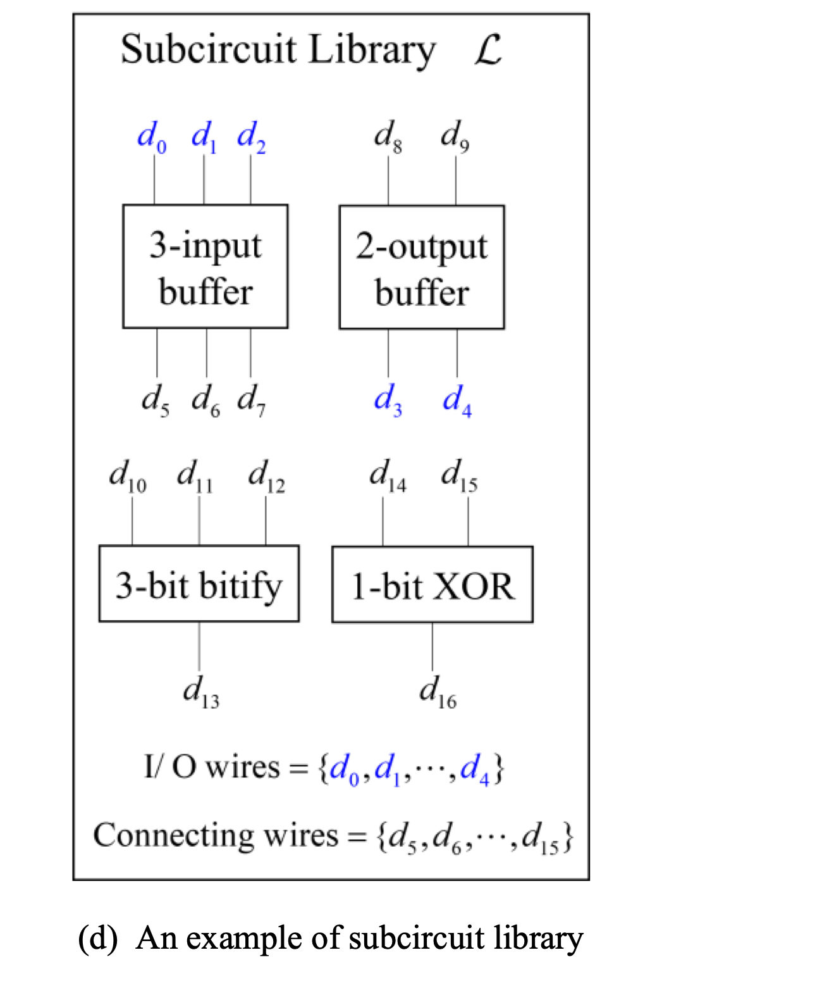
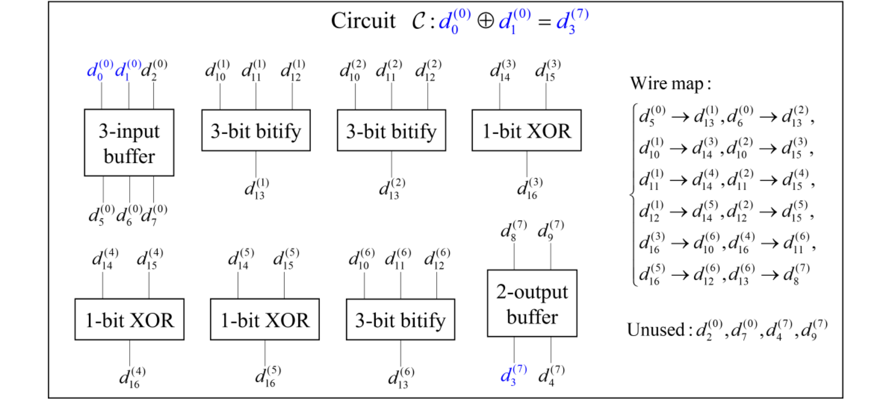

Tokamak zk-EVM and Synthesizer
고정된 subcircuit들로부터 프로그램 전용 회로를 유도하는 방법
장재혁
Tokamak Network
2026년 6월 15일
고정된 subcircuit들로부터 프로그램 전용 회로를 유도하는 방법
짧은 proof, 실행 결과 확인
실행 정당성 공개, 입력 일부 은닉
응용 목표가 scalability이든 privacy이든, 공통의 기술 문제는 EVM 실행을 검증 회로로 바꾸는 것이다.
| Project | Market cap | Bridged value |
|---|---|---|
| Starknet | ~$214M | ~$414M |
| Immutable | ~$119M | ~$3M |
| ZKsync Era | ~$109M | ~$230M |
| Linea | ~$76M | ~$349M |
| Loopring | ~$16M | ~$9M |
| Scroll | ~$6M | ~$43M |
| Project | Market cap | Bridged value |
|---|---|---|
| Zcash | ~$7.09B | n/a |
| Monero | ~$6.36B | n/a |
| Railgun | ~$163M | ~$81M |
| Aleo | ~$37M | n/a |
| Tornado Cash | ~$21M | ~$428M |
| Privacy Pools | n/a | ~$8M |
최근 privacy ZKP의 신호는 TVL보다 자본 배치와 로드맵에서 더 뚜렷하다. Privacy ZKP의 compliance, institutional adoption, private stablecoin payment 문제들이 주목받고 있다.
임의의 EVM 함수에 특화된 검증 회로를 어떻게 생성하는가?
같은 bytecode라도 성공 실행 경로가 달라지면 함수 특화 검증 회로의 모양도 달라질 수 있다.
| Project path | Execution target | Circuit style | Main witness |
|---|---|---|---|
| Scroll / Linea | EVM opcode execution | RAM-style trace validation | pc, opcode, stack, memory, storage |
| Aztec public execution | AVM bytecode | VM/RAM-style validation | AVM state and execution steps |
| Aztec private execution | private function | ACIR function-specific arithmetic circuit | private inputs and intermediate values |
같은 프로젝트 안에서도 회로화 대상에 따라 접근이 달라진다. Public VM 실행은 RAM-style 검증에 가깝고, private 함수 실행은 함수 특화 회로에 가깝다.
program, initial state, claimed final state, step bound
각 step의 pc, opcode, stack, memory, storage, call state
step별 VM 규칙, 인접 step 일관성, accept
회로는 다음 실행 경로를 찾지 않는다. prover가 제시한 실행 경로가 machine 규칙을 만족하는지 step별로 확인한다.


검증 회로 생성은 “새 언어를 만드는 일”이 아니라, subcircuit placement와 그 사이의 wire map을 정하는 일이다.
| Plain name | Technical name | Role in generated circuit |
|---|---|---|
| 재사용 회로 조각 | subcircuit | 작은 검증 규칙 |
| 선택된 사용 자리 | placement | 특정 실행 안의 subcircuit 사용 |
| 연결표 | wire map | 동일 값 관계 |
이후 용어는 subcircuit, placement, wire map으로 통일한다. wire map은 placement 사이의 wiring을 기록한다.
qap-compiler는 subcircuit library를 만들고, synthesizer는 특정 EVM 함수 실행에 필요한 placement와 wire map을 만든다.
| Compiler | When | Input | Output | Reuse scope |
|---|---|---|---|---|
qap-compiler | offline | subcircuit definitions | subcircuit library | library version |
synthesizer | per execution record | bytecode, instance, library | witness, wire map | same execution shape |
synthesizer는 경로를 새로 추측하지 않는다. 관측된 실행 기록에서 필요한 placement와 wire map을 기록한다.
mintNotes1 회로 생성 예제mintNotes1은 한 함수 안에 calldata 처리, hash-like work, accounting call, storage update, output이 함께 있어 회로 생성 흐름을 보여주기 좋다.
mintNotes1 검증 목표별 placement group회로 생성의 올바름은 온체인에서 효율적으로 검증하기 어렵다. 따라서 Tokamak zk-EVM은 입력값이 달라져도 성공 실행에서 회로 모양이 변하지 않는 DApp 함수에 audit된 회로를 재사용한다.
| Function shape | Input dependence | Support decision |
|---|---|---|
| 고정 arity / 고정 loop bound | 값만 변화 | 지원 가능 |
| 입력 의존 branch | 성공 경로가 동일 모양으로 수렴 | 조건부 가능 |
| 가변 array / 가변 loop count | 성공 경로마다 placement 수 변화 | 지원 불가 |
Tokamak zk-EVM의 지원 여부는 입력값의 크기나 내용이 아니라, 성공 실행에서 생성되는 placement topology와 wire map이 항상 같은지로 판단한다.
Private-state DApp은 하나의 가변길이 함수로 정의할 수 있었던 mint, transfer, redeem 동작을 Tokamak zk-EVM과 호환되도록 미리 정해진 고정길이 함수들로 분할한다.
| 비교 축 | RAM-style 실행 검증 | Tokamak-style 실행 검증 | Aztec private function 실행 검증 |
|---|---|---|---|
| 검증 대상 | 특정 VM의 step 실행 | EVM에서 특정 함수의 실행 | 임의 함수의 실행 |
| 회로 종류 | VM 전용 단일 회로 | EVM 전용 subcircuits + 함수 전용 topology | 함수 전용 회로 |
| 재사용 조건 | 동일 VM | 동일 함수 실행 경로 | |
| 새로운 회로 audit 범위 | 없음 | 함수 전용 topology | 함수 전용 회로의 모든 변수 |
| 실행 경로 취급 | witness | public instance | |
| 강점 | 범용성 | EVM 호환성, 회로 효율, 낮은 audit 비용 | 회로 효율 |
| 비용 / 제약 | 지나친 회로 크기 | 새로운 함수에 새로운 audit 필요 | |
| Boundary | Execution record | Wire map |
|---|---|---|
| parent → child | call depth, target | calldata copy |
| child local | callee EVM steps | local stack / memory |
| child → parent | return boundary | return-data copy |
Opcode별 디테일은 다르지만, 질문은 같다. “이 opcode가 어떤 symbol을 소비하고, 어떤 placement를 만들며, 다음 symbol을 어디에 남기는가?”
ADD 같은 local opcode는 계산 결과만 만드는 것이 아니라, stack symbol을 입력으로 받는 subcircuit placement 하나와 출력 symbol을 남긴다.
State와 memory opcode의 난점은 산술이 아니라 “외부 값 또는 과거 write 조각을 어떤 symbol과 wire map으로 연결할 것인가”이다.
| Source type | References | Use in deck |
|---|---|---|
| Paper | Jang and Judd, An Efficient SNARK for Field-Programmable and RAM Circuits | field-programmable and RAM circuit model |
| Implementation | Tokamak zk-EVM GitHub repository, Tokamak synthesizer code examples, opcode reference | architecture, example flow, opcode handling |
| Comparative | Scroll zkEVM overview, LFDT-Lineth, Aztec docs | project approach comparison |
| Market | L2BEAT, DefiLlama, CoinGecko, EF privacy posts, PSE roadmap | motivation and context |